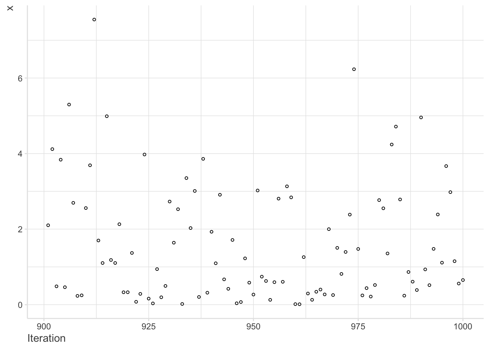
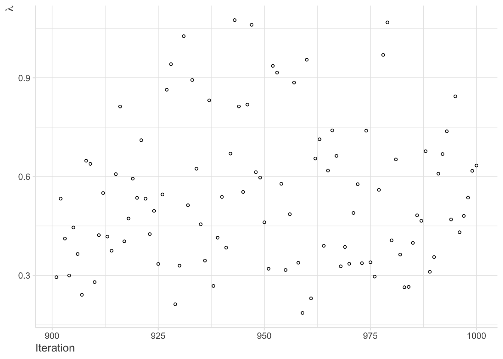
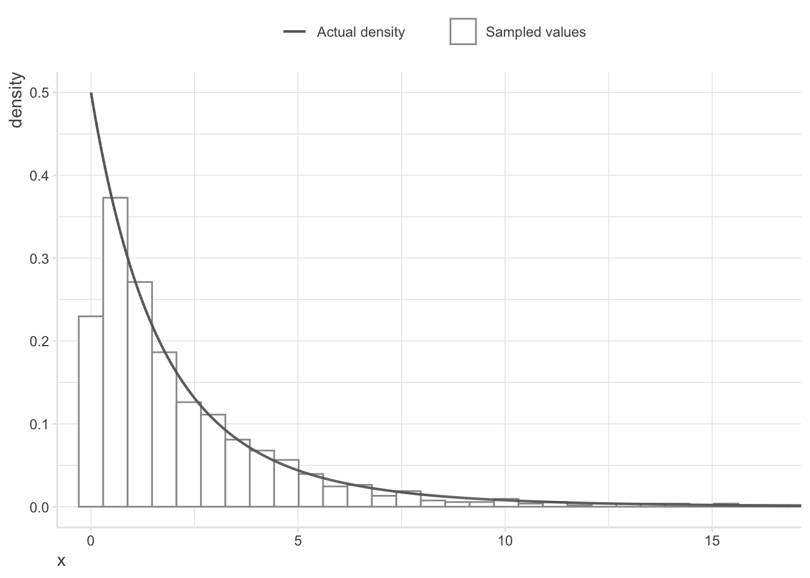
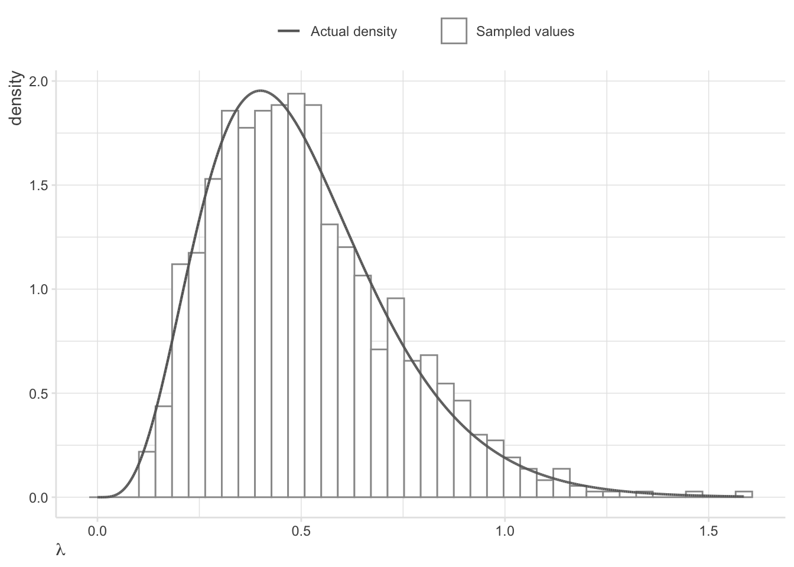
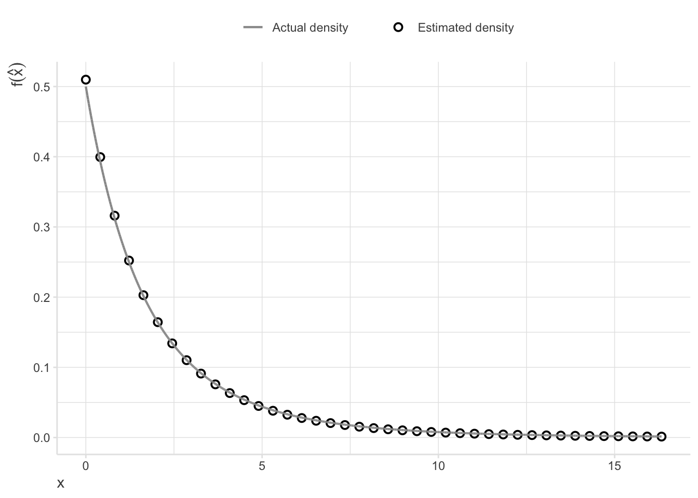
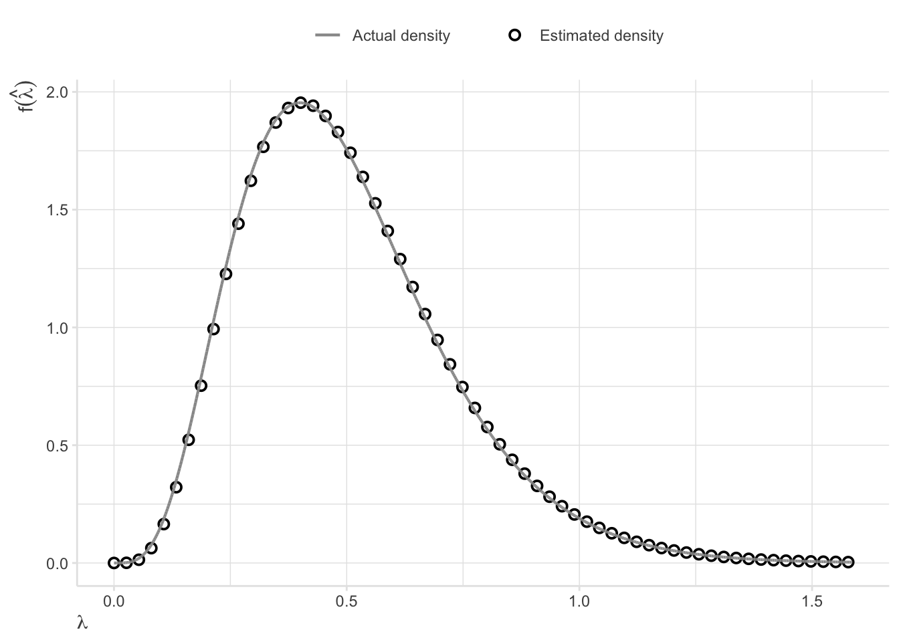
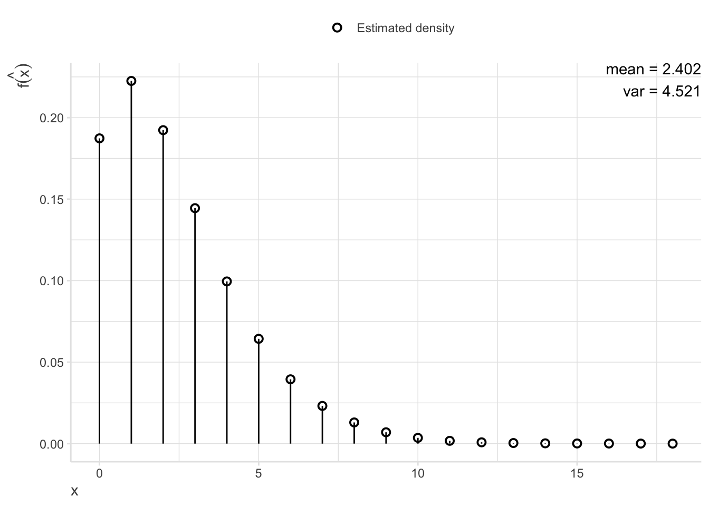

This paper discusses how a variety of actuarial models can be implemented and analyzed with a Bayesian approach using Gibbs sampling, a Markov chain Monte Carlo method. This approach allows a practitioner to analyze complicated actuarial models by reducing them to simpler, more manageable models. Furthermore, general properties of Gibbs sampling are discussed through a simulation approach.
Keywords
Bayesian inference, Gibbs sampling, Markov chain, Monte Carlo simulation
Quarto blog publish details
This blog was created using Quarto and published with Github Pages.
R Setup
Code
# load packageslibrary(tidyverse)library(actuar)# for pareto()library(truncdist)# for rtrunc()library(kableExtra)# for kable_styling()# create default storytelling with data themetheme_swd<-theme_minimal()+theme(# titles and captions plot.title =element_text(size =rel(1.75), color ="grey30"), plot.subtitle =element_text(size =rel(1.25), color ="grey30"), plot.caption =element_text(hjust =0, color ="grey30"),# axes axis.title.x =element_text(hjust =0, color ="grey30"), axis.title.y =element_text(hjust =1, color ="grey30"), axis.line =element_line(color ="grey90"), axis.ticks =element_line(color ="grey90"),# plot background and gridlines panel.background =element_blank(), panel.grid.major =element_line(linewidth =rel(0.5), color ="grey90"), panel.grid.minor =element_line(linewidth =rel(0.5), color ="grey90"),# legend legend.title =element_text(color ="grey30"), legend.text =element_text(color ="grey30"), legend.position ="top")
1 Introduction
The use of predictive models in research is a common practice for actuaries. However, they are still realizing the full potential of the many available techniques involving predictive models. The recent developments in high speed computation have opened new avenues to actuaries who are involved in constructing models that can be used in predicting future uncertain events. The practical development of techniques such as linear programming, dynamic programming, Monte Carlo experiments and many others would not have been possible without the arrival of high-speed computers. The actuarial profession needs to keep pace with these developments and consider how these methods can be utilized more effectively in decision making.
Stochastic models play a wide role in actuarial science applications. Mathematical analysis (a theoretical approach) is one way to extract characteristics of such models. A practitioner may also use simulation to study these models. This approach is especially useful when the stochastic models are complicated and impossible to tract theoretically. Because many actuarial models are like this, simulation is an important tool.
This paper discusses usefulness and importance of combining Monte Carlo simulation techniques with Bayesian analysis in order to study complicated stochastic models in actuarial sciences. Bayesian analysis is quite useful as it allows one to learn about the whole distribution of a chosen quantity, rather than just a single statistic. Additionally, the assignment of probability distributions to unknown quantities allows for the reflection of uncertainty. This uncertainty is represented as the prior distribution, which is then updated with data. This increases the reliability of the estimates. Then, once suitable models for the parameters are obtained, one can study the distribution of the variables of interest, which is the end goal of Bayesian analysis.
1.1 Bayesian Inference
In classical statistical techniques, model parameters are assumed to be fixed quantities; only the data is random. Thus, probability distributions can only be used to represent the data. But in Bayesian statistics, probability distributions are often applied to more than just the data. They can represent prior uncertainty in model parameters. These then get updated with current data to produce posterior probability distributions. In effect, the parameters now contain less uncertainty; in other words, they are more informed. This thinking produces a general rule in Bayesian statistics: any quantity which has uncertainty can be represented by a probability distribution. This can be shown in Bayes’ theorem, which simply is a demonstration of conditional probability, expressed using probability distributions as follows:
In this scenario, \(f(\theta\mid data)\) is the posterior distribution for the parameter \(\theta\). \(f(data\mid\theta)\) is the sampling density for the data. This distribution is proportional to the likelihood function; however, it differs by a constant which serves to make it a proper density. \(f(\theta)\) is the prior distribution for the parameter. Finally, \(f(data)\) is the marginal probability of the data. When considering a continuous sample space, this marginal probability is computed as
In words, this is the integral of the sampling density multiplied by the prior distribution over the sample space of \(\theta\). This quantity is often referred to as the “marginal likelihood” for the data. It makes the posterior density proper by functioning as a normalizing constant. In addition, it is proportional to the likelihood function. These two qualities lead Bayes’ theorem for probability distributions to be frequently stated as
\[
Posterior \approx Likelihood\,\times Prior.
\]
Once the posterior distribution for a parameter is derived, Bayesian analysis attempts to summarize the entire distribution. In addition to not having a reliance on asymptotic arguments about normality, this allows for numerous additional tests and summaries. Occasionally, these distributions have closed-form solutions (or at least solutions that can be computed using numerical methods). However, for many other distributions the integrals may be quite difficult or even impossible to compute, especially multivariate ones. In this instance, Monte Carlo simulation plays a major role. The general logic of sampling is to generate a sample of size \(n\) from the desired distribution and then apply discrete formulas to these samples. This, in effect, approximates the integrals of interest. For example, a mean is estimated by
Additionally, any desired quantile can be found by noting the value of \(x\) that has \(Q\%\) of the sampled values below it.
To sum up, Bayesian inference commonly follows these steps:
Creating a model and obtaining posterior distributions for the parameters being studied.
Simulating samples from the posterior distributions.
Taking discrete formulas and applying them to the samples found in step 2 in order to summarize knowledge of the parameters.
This whole process differs from the approach taken in Classical statistics, where point estimates are found for parameters and inferences are conducted using the standard error and the central limit theorem.
1.2 Markov Chain Monte Carlo Methods and Gibbs Sampling
One very useful class of simulation techniques is known as Markov chain Monte Carlo (MCMC) sampling methods. The purpose of using these methods is to study distributions that would be very difficult to study otherwise (these distributions will later be referred to as “target distributions”). With the use of MCMC methods, a researcher can simulate a series of dependent random draws from models that are often quite complex. MCMC methods prove to be very useful when sampling from multivariate distributions that would normally be difficult to sample from. This is done by breaking them down into more feasible multivariate distributions or even univariate distributions.
The first step of a MCMC method is to specify a Markov chain with a unique invariant distribution equal to the target distribution (we will discuss one way to do this in the following paragraph). The next step is to generate a new value from this Markov chain given the previous value (for further reading, refer to (Berg 2004). This forms an iterative process which produces a Markov chain of values. Furthermore, after the burn-in iterations1 are complete, it has been shown that these generated values nearly follow a random draw from the target distribution. These samples can then be used for inference procedures in a variety of ways.
One popular MCMC method for constructing a Markov chain for a target density is Gibbs sampling. It was first introduced to the field of image restoration by Geman and Geman (Geman and Geman 1984), however its use in the field of Bayesian analysis was first recognized by Gelfand and Smith (Gelfand and Smith 1990). Since then, Gibbs sampling has only appeared a few times within actuarial literature. Carlin (Carlin 1992) used Gibbs sampling to study state space modeling of non-standard actuarial time series and Carlin (Carlin 1994) also used it to develop a Monte Carlo approach to Bayesian graduation. Klugman and Carlin (Carlin B. P. and Klugman S.A 1993) used Gibbs sampling in a similar area, however they had a focus on Whittaker-Henderson graduation. Additionally, Scollnik (Scollnik 1993) performed a Bayesian analysis of a simultaneous equations model for insurance rate-making.
On occasion, sampling from the multivariate posterior distribution is not feasible but sampling from the conditional distributions of each parameter is possible (for further reading, refer to (Besag 1974)). In this situation, Gibbs sampling has been found to be quite applicable. To create the Markov chain, Gibbs sampling uses a set of full conditional distributions associated with the target distribution. These are then used to generate a Markov chain with a unique invariant distribution equal to the target distribution. A basic Gibbs sampling algorithm is displayed below (\(j\) represents the iteration count).
Assign a vector of starting values \(x^{(j)} = (x^{(j)}_1, x^{(j)}_2, \ldots, x^{(j)}_k)\), with \(j=0\).
k+1. Form \(x^{(j)} = (x^{(j)}_1, x^{(j)}_2, \ldots, x^{(j)}_k)\).
k+2. Return to step 1.
In words, the Gibbs sampling algorithm defined above generates a random draw from each of the full conditional distributions. However, as the algorithm progresses, the values of the conditioning variables are sequentially updated. Thus, the next draw depends on the previous one. Moreover, a key aspect of Gibbs sampling is that the full conditional distribution does not need to be known; it only needs to be known up to a normalizing constant. In conjunction with a Bayesian approach, Gibbs sampling allows us to use the joint densities that have all other parameters set at their current values. In other words, with all other parameters treated as fixed, the result is often a known form of the density. This greatly reduces the difficulty of many analyses.
2 Applications
2.1 Demonstrating the Properties of Gibbs Sampling
Here we are going to study the properties of Gibbs sampling through simulation. We start by assuming the size of a claim \(X\) is exponentially distributed with parameter \(\lambda\). Further, we treat the parameter \(\lambda\) as a random variable that follows a gamma distribution with parameters \(\alpha\) and \(\beta\). \(\alpha\) and \(\beta\) are constants. Stemming from our Bayesian approach, we can write this information as follows: the conditional distribution of \(X\) given \(\lambda\) as
Note that \(f(x)\) simplifies to a Pareto distribution with parameters \(\alpha\) and \(\beta\). This density is the closed form solution that was mentioned in Section 1.1; in most problems, this is not possible to obtain. However, we chose distributions such that there would be a closed form solution in order to compare our results to. Finally, we can solve for each conditional distribution. Having already been given \(f(x \mid \lambda)\) in Equation Equation 1, \(f(\lambda\mid x)\) is derived as follows:
Notice here that the conditional distribution of \(f(\lambda \mid x)\) simplifies to a gamma distribution. This is because of the use of a conjugate prior distribution. This simply means that the mixing distribution is from the same family as the variable of interest (for further reading, refer to (Casella and Berger 2002)).
The next step in Gibbs sampling is to run our two conditional distributions through the iterative algorithm defined below:
Select arbitrary initial values \(x^{(0)}\) and \(\lambda^{(0)}\).
Set counter index \(i = 0\).
Sample \(x^{(i+1)}\) from \(f(x \mid \lambda^{(i)}) \sim \text{exponential}\,(\lambda)\).
Sample \(\lambda^{(i+1)}\) f from \(f(\lambda\mid x^{(i+1)}) \,\sim \text{gamma}\,(\alpha+1,x^{(i+1)}+\beta)\).
Set \(i = i + 1\) and return to step 3.
For illustrative purposes, assume \(\alpha = 5\) and \(\beta = 100\). This reduces the uncertainty to the random variables \(X\) and \(\lambda\). Using the principles of Gibbs sampling as shown above, 100,000 random numbers are generated for \(X\) and \(\lambda\).
Code
# function to generate random data from conditional distributionsgenerate_sample1<-function(n=10000, alpha=5, beta=100, start_x=5, start_lambda=1.5, seed=0){# create matrix# -> NOTE -> matrices are much faster than dataframesdata_sample<-matrix(data =NA, nrow =n, ncol =3, dimnames =list(NULL, c("iteration", "X", "lambda")))# conditionally set random seedif(seed>0)set.seed(seed)# initialize counter and starting valuesi=1data_sample[i, ]=c(i, start_x, start_lambda)# generate new data for x and lambda based on sequentially updated conditional distributionswhile(i<n){# record iterationdata_sample[i+1, "iteration"]<-i+1# sample from x | lambdadata_sample[i+1, "X"]<-rexp(n =1, rate =data_sample[i, "lambda"])# sample from lambda | xdata_sample[i+1, "lambda"]<-rgamma(n =1, shape =alpha+1, rate =data_sample[i+1, "X"]+beta)# increase counteri<-i+1}return(data_sample)}# initialize itemsn<-1000alpha<-5beta<-10start_x<-150start_lambda<-2# sample from conditional distributions# set seed for all simulationsseed<-09222023data_sample<-generate_sample1(n =n, alpha =alpha, beta =beta, start_x =start_x, start_lambda =start_lambda, seed =seed)# create data for scatterplotdata_scatter<-data_sample%>%data.frame%>%filter(iteration>n-100)# set number of burn-in iterationsburn_in<-100# remove burn-in iterationdata_sample2<-data_sample%>%data.frame%>%filter(iteration>burn_in)
Figure 1 shows the last 100 sampled values for \(X\) and Figure 2 shows the last 100 sampled values for \(\lambda\):
Code
# create scatterplots of last iterations to visually check for randomnessggplot()+geom_point(aes(x =iteration, y =X), data =data_scatter, color ="black", fill ="white", shape =21, size =1, stroke =0.5)+labs(x ="Iteration", y ="x")+theme_swd
Figure 1: Scatterplot of generated sample values of X

Code
ggplot()+geom_point(aes(x =iteration, y =lambda), data =data_scatter, color ="black", fill ="white", shape =21, size =1, stroke =0.5)+labs(x ="Iteration", y =expression(lambda))+theme_swd
Figure 2: Scatterplot of generated sample values of λ

As one can see from Figure 1 and Figure 2, there is no pattern among the generated random numbers. Therefore, they can be considered as independent random samples.
Next, Figure 3 and Figure 4 show the histograms of the last 99,500 sampled values of \(X\) and \(\lambda\), respectively. These values are generated from dependent sampling schemes, which were based on the full conditional distributions of \(f(x \mid \lambda)\) and \(f(\lambda \mid x)\). The first 500 values of each sequence are discarded as these are considered to be the burn-in iterations. Additionally, the respective marginal density curves of \(X\) and \(\lambda\) are overlaid on their corresponding histogram.
Code
# set maximum for x plotlimit_x<-quantile(data_sample2$X, 0.995)# in order to get the correct legend that I want...# -> have to trick ggplot by adding another aesthetic to the desired geom (just map the correct aesthetic to a string constant of what I want it to say)# -> then do a scale_<...>_manual(values = "< desired color >")# -> also in a labs statement, make the name of label of that aesthetic an empty string# cannot do this trick more than once with the same aesthetic# -> so if need the legend for multiple things, they must be mapped to different aesthetics# create histogram of x with marginal density curve overlaidggplot()+geom_histogram(aes(x =X, y =after_stat(density), fill ="Sampled values"), data =data_sample2, bins =40, color ="grey60")+stat_function(aes(x =x, color ="Actual density"), data =data.frame(x =c(0, limit_x)), fun =dpareto2, args =list(min =0, shape =alpha, scale =beta), n =100000, size =0.75)+coord_cartesian(xlim =c(0, limit_x))+scale_fill_manual(values ="white")+scale_color_manual(values ="grey40")+labs(x ="x", color ="", fill ="")+theme_swd
Figure 3: Histogram of generated sample values of X

Code
# create histogram of lambda with marginal density curve overlaid# -> no limits were made for lambda because there won't be huge outliersggplot()+geom_histogram(aes(x =lambda, y =after_stat(density), fill ="Sampled values"), data =data_sample2, bins =40, color ="grey60")+stat_function(aes(x =x, color ="Actual density"), data =data.frame(x =c(0, max(data_sample2$lambda))), fun =dgamma, args =list(shape =alpha, rate =beta), n =100000, size =0.75)+scale_fill_manual(values ="white")+scale_color_manual(values ="grey40")+labs(x =expression(lambda), color ="", fill ="")+theme_swd
Figure 4: Histogram of generated sample values of λ

The marginal densities appear to line up very well with the sampled values, which indicates the implemented dependent sampling schemes have generated random samples from their respective marginal distributions.
This is a property of Gibbs sampling. In effect, by taking very large random samples from the conditional posterior distributions, it appears as if the samples were taken from their respective marginal distributions. Thus, the generated random variates can be used to study the properties of the distribution of interest. With more complicated models, sampling from the marginal distributions directly would have been impossible; but with Gibbs sampling, it can be simulated. With these results in mind, we can formally state Gibbs sampling as:
The realization that as the number of iterations approaches infinity, the samples from the conditional posterior distributions converge to what the actual target distribution is that could not be sampled from directly.
This states that the marginal distribution of \(X\) can now be interpreted as the average of the conditional distribution of \(X\) given \(\lambda\) taken with respect to the marginal distribution of \(\lambda\). This fact suggests that an estimate for the actual value of \(f(x)\) at the point \(x\) may be obtained by taking the simulated average of \(f(x \mid \lambda)\) over the sampled values of \(\lambda\), as shown in equation Equation 2.
After solving for and plotting these estimated densities, direct models of their respective target distribution are revealed. The next two figures show this relationship.
Code
# function to solve for density estimatesestimate_density1<-function(input_values=1, given_values=1, equation=1){# calculate density estimatedensity_estimate<-equation(input_values, given_values)%>%colMeans}# function to perform calculations for xdensity_x_given_lambda<-function(X=1, Lambda=1){# specify density equationLambda*exp(-Lambda*X)}# function to perform calculations for lambdadensity_lambda_given_x<-function(Lambda=1, X=1){# specify density equation(((X+beta)^(alpha+1))*(Lambda^alpha)*exp(-Lambda*(X+beta)))/gamma(alpha+1)}# set max for plot and calculate points to estimate density of x at (if is to make sure step isn't zero)step_x<-ifelse(diff(range(data_sample2$X))>1,round((quantile(data_sample2$X, 0.995)-min(data_sample2$X))/40, 5)%>%as.numeric, 0.01)# set maximum for lambda plotlimit_x<-quantile(data_sample2$X, 0.995)# create matrices of data to be used for xvalues_x<-seq(0, limit_x, by =step_x)X1<-matrix(data = , values_x, nrow =nrow(data_sample2), ncol =length(values_x), byrow =TRUE)Lambda1<-matrix(data =data_sample2$lambda, nrow =nrow(data_sample2), ncol =ncol(X1))# calculate density estimates for f(x)data_estimated_x<-estimate_density1(input_values =X1, given_values =Lambda1, equation =density_x_given_lambda)%>%data.frame(x =values_x, f_x_hat =.)
$x$
$f\hat(x)$
0.000
0.510
0.408
0.400
0.817
0.316
1.225
0.252
1.633
0.203
2.041
0.164
2.450
0.134
2.858
0.110
3.266
0.091
3.675
0.076
Code
# set max for plot and calculate points to estimate density of lambda at (if is to make sure step isn't zero)step_lambda<-ifelse(diff(range(data_sample2$lambda))>1,round((quantile(data_sample2$lambda, 0.995)-min(data_sample2$lambda))/40, 5)%>%as.numeric, 0.01)# create matrices of data to be used for lambdavalues_lambda<-seq(0, max(data_sample2$lambda), by =step_lambda)Lambda2<-matrix(data = , values_lambda, nrow =nrow(data_sample2), ncol =length(values_lambda), byrow =TRUE)X2<-matrix(data =data_sample2$X, nrow =nrow(data_sample2), ncol =ncol(Lambda2))# calculate density estimates for f(lambda)data_estimated_lambda<-estimate_density1(input_values =Lambda2, given_values =X2, density_lambda_given_x)%>%data.frame(lambda =values_lambda, f_lambda_hat =.)
$\lambda$
$f\hat(\lambda)$
0.000
0.000
0.027
0.001
0.053
0.014
0.080
0.063
0.107
0.165
0.134
0.322
0.160
0.523
0.187
0.753
0.214
0.993
0.241
1.227
Code
# X plot# -> density estimates with marginal density curve overlaidggplot()+geom_point(aes(x =x, y =f_x_hat, fill ="Estimated density"), data =data_estimated_x, color ="black", shape =21, size =2, stroke =1)+stat_function(aes(x =x, color ="Actual density"), fun =dpareto2, args =list(min =0, shape =alpha, scale =beta), data =data.frame(x =c(0, limit_x)),n =100000, size =0.75)+coord_cartesian(xlim =c(0, limit_x))+scale_fill_manual(values ="white")+scale_color_manual(values ="grey60")+labs(x ="x", y =expression(f(hat(x))), color ="", fill ="")+theme_swd
Figure 5: Estimated and actual density of X

Code
# Lambda plot# -> density estimates with marginal density curve overlaidggplot()+geom_point(aes(x =lambda, y =f_lambda_hat, fill ="Estimated density"), color ="black", shape =21, size =2, stroke =1, data =data_estimated_lambda)+stat_function(aes(x =x, color ="Actual density"), fun =dgamma, args =list(shape =alpha, rate =beta), data =data.frame(x =c(0, max(data_sample2$lambda))), n =100000, size =0.75)+scale_fill_manual(values ="white")+scale_color_manual(values ="grey60")+labs(x =expression(lambda), y =expression(f(hat(lambda))), color ="", fill ="")+theme_swd
Figure 6: Estimated and actual density of λ

Figure 5 shows the plotted points of \(f(\hat{x})\) with its known function \(f(x)\) overlaid. Figure 6 shows the same information except for \(\lambda\). As one can see on both figures, the estimated densities happen to be excellent representations of the actual densities. If looking at a more complicated model where the target distribution cannot be solved for in closed form, there is now methods to solve for and study a random sample from an unknown distribution.
2.2 Modeling Number of Claims
Actuaries often try to model the number of claims to be filed for a certain book of business. These books contain many individual policies, each with similar risk characteristics. These characteristics contribute to the probability that a claim is filed. Therefore, each book of business, which we will refer to as a portfolio, contains many policies that have a similar probability of filing a claim. This is done to allow for analyses to be completed on the group as a whole, rather than on each individual policy.
In order to model the number of claims for a portfolio, let claim probability \(P\) (as a random variable) follow a beta distribution with parameters \(\alpha\) and \(\beta\).
It is a common practice to model claim probability \(P\) with a beta distribution, where the values are bounded between zero and one. In practice, distributions for probabilities of filing a claim (\(P\)) are skewed to the right allowing higher chances for smaller \(P\)’s and increasingly lower chances for higher \(P\)’s. The skewness of the beta distribution can easily be controlled with correctly chosen parameters \(\alpha\) and \(\beta\). Next, we have to model the number of policies within a certain portfolio. To do this, the Poisson distribution is widely used. However, we are going to modify it slightly. By truncating the random variable at zero (zero truncated Poisson distribution), we can ensure that the portfolio has at least one policy. Now, the total number of policies within a portfolio \(N\) can be written as
Next, let’s focus on the number of policies that file a claim. Assuming that filing a claim for a policy is independent and that the probability of filing a claim is constant throughout the lifetime of the policy, the number of policies that file a claim \(X\) can be modeled using a binomial distribution with parameters \(N\) and \(P\). Thus, we have
This is a well chosen distribution as it incorporates both of our previous random variates as parameters. It follows that the random variable \(X\) can now be interpreted as the number of policies that generate a claim in a portfolio of \(N\) identical and independent policies, each with a claim probability equal to \(P\). Most often actuaries are less interested in the conditional distribution of the variable of interest, but rather the marginal distribution. This is because the marginal distribution of our random variate \(X\) describes the typical number of policies generating a claim within an arbitrary portfolio; this is much more informative for them. However, \(f(x)\) cannot be obtained in closed form in this particular model. Gibbs sampling is one possible solution for this problem.
As shown earlier, the first step of Gibbs sampling is to find the conditional distributions of each random variable. These are derived as follows:
Note that the distribution \(f(p\mid x,n)\) follows a beta distribution with parameters \(x+\alpha\) and \(n+\beta-x\), as shown in equation Equation 4. Additionally, the conditional distribution of \(N\) follows a Poisson distribution with parameter \(\lambda(1-p)\), which is shown in equation Equation 5. In order to implement Gibbs sampling, we simply need to initialize the variables. For the purposes of illustration, we select \(\alpha = 2\) (weight on \(p\)) and \(\beta = 8\) (weight on \(1-p\)). This makes the distribution in equation Equation 4 right skewed. Furthermore, we assume the average number of policies within a portfolio is 12 (\(\lambda = 12\)). Next, we run a loop to generate \(10,000\) random numbers from each of the full conditional distributions. We then discard the first \(500\) values of each sampling path in order to burn-in Gibbs sampling.
Code
# function to generate random data from conditional distributionsgenerate_sample<-function(k=10000, alpha=5, beta=8, lambda=12, start_x=5, start_p=0.5, start_n=15, seed=0){# create matrixdata_sample<-matrix(data =NA, nrow =k, ncol =4, dimnames =list(NULL, c("iteration", "X", "p", "n")))# conditionally set random seedif(seed>0)set.seed(seed)# initialize counter and starting valuesi=1data_sample[i, ]=c(i, start_x, start_p, start_n)# generate new data for x, p and n based on sequentially updated conditional distributionswhile(i<k){# record iterationdata_sample[i+1, "iteration"]<-i+1# sample from x | p , ndata_sample[i+1, "X"]<-rbinom(n =1, size =data_sample[i, "n"], prob =data_sample[i, "p"])# sample from p | x , ndata_sample[i+1, "p"]<-rbeta(n =1, shape1 =data_sample[i+1, "X"]+alpha, shape2 =data_sample[i, "n"]+beta-data_sample[i+1, "X"])# sample from n - x | x , p and then calculate final n = (n - x) + xdata_sample[i+1, "n"]<-rpois(n =1, lambda =lambda*(1-data_sample[i+1, "p"]))+data_sample[i+1, "X"]# increase counteri<-i+1}return(data_sample)}# initialize itemsk<-10000alpha<-2beta<-8lambda<-12start_x<-5start_p<-0.5start_n<-15# sample from conditional distributionsdata_sample<-generate_sample(k =k, alpha =alpha, beta =beta, lambda =lambda, start_x =start_x, start_p =start_p, start_n =start_n, seed =seed)# set number of burn-in iterationsburn_in<-100# remove burn-in iterationdata_sample2<-data_sample%>%data.frame%>%filter(iteration>burn_in)
Iteration
$X$
$N$
$P$
101
0
0.036
10
102
1
0.114
11
103
0
0.119
11
104
0
0.037
7
105
1
0.165
10
106
2
0.077
13
107
1
0.191
14
108
3
0.125
12
109
2
0.199
14
110
4
0.280
16
The output of this simulation is an approximately independent random sample from each of the conditional distributions \(f(n \mid x,p)\), \(f(p \mid x, n)\), and \(f(x \mid p, n)\). We are interested in studying the distribution of \(f(x)\), which as noted earlier could not be found in closed form. However, by averaging equation Equation 3 over the simulated values \(P^{(i)}\) and \(N^{(i)}\), a density estimate for the random variable \(X\) can be obtained. In other words, the estimated value of the density of \(f(x)\) at the point \(x\) is given by
# function to solve for density estimatesestimate_density<-function(input_values=1, given_values1=1, given_values2=1, equation=1){# calculate density estimatedensity_estimate=equation(input_values, given_values1, given_values2)%>%colMeans}# function to perform calculations for x# -> x is technically a pmfdensity_x_given_p_and_n<-function(X=1, P=0.5, N=1){# specify density equationchoose(N, X)*P^X*(1-P)^(N-X)}# determine step size for x valuesif(diff(range(data_sample2$X))>75){step<-5}else{step<-1}# create matrices of data to be used for xvalues_x<-seq(0, max(data_sample2$X), by =step)X<-matrix(data = , values_x, nrow =nrow(data_sample2), ncol =length(values_x), byrow =TRUE)P<-matrix(data =data_sample2$p, nrow =nrow(data_sample2), ncol =ncol(X))N<-matrix(data =data_sample2$n, nrow =nrow(data_sample2), ncol =ncol(X))# calculate density estimates for f(x) and scale so that probabilities sum to one# -> with a step of 1, it is always super close to 1# --> but if use a different step size, need to scale probabilitiesdata_estimated_x<-estimate_density(input_values =X, given_values1 =P, given_values2 =N, equation =density_x_given_p_and_n)%>%data.frame(x =values_x, f_x_hat =.)%>%mutate(f_x_hat =f_x_hat/sum(f_x_hat))
$x$
$f\hat(x)$
0
0.187
1
0.223
2
0.192
3
0.144
4
0.100
5
0.064
6
0.039
7
0.023
8
0.013
9
0.007
Code
# function to calculate mean of discrete probability distributioncalc_mean<-function(x=1, p_x=1){sum(x*p_x)}# function to calculate variance of discrete probability distributioncalc_var<-function(x=1, p_x=1){# calculate meanmean<-sum(x*p_x)# calculate variancesum(((x-mean)^2)*p_x)}# calculate meanx_mean<-round(calc_mean(x =data_estimated_x$x, p_x =data_estimated_x$f_x_hat), 3)# calculate variancex_var<-round(calc_var(x =data_estimated_x$x, p_x =data_estimated_x$f_x_hat), 3)# X plot# -> density estimates with marginal density curve overlaidggplot()+geom_point(aes(x =x, y =f_x_hat, fill ="Estimated density"), data =data_estimated_x, color ="black", shape =21, size =2, stroke =1)+geom_linerange(aes(x =x, ymax =f_x_hat), data =data_estimated_x, ymin =0)+annotate("text", label =paste0("mean = ", x_mean, "\nvar = ", x_var), x =Inf, y =Inf, hjust =1, vjust =1)+scale_fill_manual(values ="white")+labs(x ="x", y =expression(hat(f(x))), fill ="")+theme_swd
Figure 7: Estimated density of X

A plot of this density estimate appears in …. From this, actuaries can compute many statistics for a portfolio with parameters \(p\) and \(n\). These can then be used to more accurately predict the number of claims expected for the future. For example, the expected value of \(X\) can be found; in this case, \(E(X)\) = 2.402 claims. Combined with a model of the size of a typical claim, this statistic can tell an insurer the amount of loss they expect per policy (in dollars). Another statistic that can be found is the variance of \(X\). This tells the average risk of each portfolio. If a group of policies has a large variance, then there could potentially be a large number of claims. This implies a higher risk, which means this particular group of policies likely will have a higher premium. For this model, \(Var(X)\) = 4.521.
2.3 Modeling Size of Claim
In contrast to the previous model, which dealt with the number of claims, this one deals with the size of claims (i.e. loss amounts). Loss distributions have high probabilities for lower values and a long tail to allow for large claims, however with an increasingly smaller probability. A widely used distribution to model loss is the Pareto distribution. It incorporates parameters \(\lambda\) and \(\theta\) and has the following density function:
Note that this distribution is a variation of the Pareto distribution called a Lomax distribution. It is essentially the same, however it has been shifted so that the support set begins at zero. To simplify the presentation, we assume that the parameter \(\lambda\) is known to be 7,000 so that the only uncertainty is with respect to the value of the parameter \(\theta\). Therefore, the prior distribution, represented as \(\theta\), follows a gamma distribution with parameters \(\alpha\) and \(\beta\). In order to make further inference, again Gibbs sampling can be implemented. However, here we are considering a somewhat different situation: assume a total of 50 independent observations are available, but we only know the class frequencies (Table 1).
Table 1: Grouped data
Class
Frequency
0 – 1000
25
1000 – 2000
15
2000 – 3000
7
3000 – \(\infty\)
3
If the original observations (losses) were given, the likelihood function \(L(\theta\mid observations)\) can be written as
Combining this likelihood function with the conjugate gamma \((\alpha,\beta)\) prior density for \(\theta\) results in the following posterior density:
Note that the conditional distribution of \(\theta\) once again follows a gamma distribution, this time with parameters \(50+\alpha\) and \(\beta-50 \ln\lambda+\sum_{i=1}^{50}\ln(\lambda+x_i)\), as shown in equation Equation 6; this is because of the conjugate nature of the gamma/Pareto distributions. Now, assume \(\alpha = 1\) and \(\beta = 0.1\). This produces a large variance in the prior distribution. These values form a vague/uninformative prior which reflects the relative ignorance of the prior distribution. While this approach is common, the practitioner should adopt whatever form of the prior density that describes the prior information actually available. Next, a procedure called data augmentation is utilized on the grouped data in order to study individual losses. The augmented data values are all independently distributed given the model parameters and each is distributed according to the Pareto density function. However, they are restricted to the appropriate class interval. Thus, the conditional distribution of the augmented data given the model parameters and the observed class frequencies is described by the following set of truncated Pareto distributions:
\[
\begin{align*}
x_i &\sim\text{truncated }Pareto\,(\theta, \lambda)\text{ on the interval }(0, 1000] ]\text{ for } i = 1,2,\ldots,25\\
x_i &\sim\text{truncated }Pareto\,(\theta, \lambda)\text{ on the interval } (1000, 2000] \text{ for } i = 26,27,\ldots,40\\
x_i &\sim\text{truncated }Pareto\,(\theta, \lambda)\text{ on the interval } (2000, 3000] \text{ for } i=41,42,\ldots,47\\
x_i &\sim\text{truncated }Pareto\,(\theta, \lambda)\text{ on the interval } (3000, \infty) \text{ for } i = 48,49,50.
\end{align*}
\tag{7}\]
By applying Gibbs sampling to the 1001 full conditional distributions defined by equations Equation 6 and Equation 7, a Markov chain with an invariant distribution equal to \(P(\theta, \text{augmented data} \mid \text{observed data})\) can be simulated. In order to make the posterior inference with respect to \(\theta\), the parameter of interest, \(10000\) replications of this Markov chain are generated. Randomly selected starting values for \(\theta\) and the augmented data are used each time.
Code
# function to generate random data from conditional distributionsgenerate_sample<-function(k=10000, n=50, lambda=7000, alpha=1, beta=0.1, start_theta=5, seed=0){# create matrixx=matrix(data =NA, nrow =n, ncol =k)theta=matrix(data =start_theta, nrow =1, ncol =k)total=matrix(data =NA, nrow =1, ncol =k)# conditionally set random seedif(seed>0)set.seed(seed)# loop to generate new x's and theta'si=1while(i<=k){# generate x | theta based on truncated distributionfor(jin1:n){if(j<=0.5*n){x[j,i]=rtrunc(n =1, a =0, b =1000, spec ="pareto2", min =0, shape =theta[i], scale =lambda)}elseif(j<=0.8*n){x[j,i]=rtrunc(n =1, a =1000, b =2000, spec ="pareto2", min =1000, shape =theta[i], scale =lambda)}elseif(j<=ceiling(0.94*n)){x[j,i]=rtrunc(n =1, a =2000, b =3000, spec ="pareto2", min =2000, shape =theta[i], scale =lambda)}else{x[j,i]=rtrunc(n =1, a =3000, b =Inf, spec ="pareto2", min =3000, shape =theta[i], scale =lambda)}}# calculate totaltotal[i]=sum(log(lambda+x[,i]))# generate a theta | xif(i==k)breakelsetheta[i+1]=rgamma(1, shape =50+alpha, rate =beta-50*log(lambda)+total[i])# increase counter by 1i=i+1}return(list(x =x, theta =theta))}# initialize itemsk<-100000n<-50lambda<-7000alpha<-1beta<-0.1# sample from conditional distributionsdata_sample<-generate_sample(k =k, n =n, lambda =lambda, alpha =alpha, beta =beta, start_theta =5, seed =seed)
X1
X2
X3
X4
X5
293.149
28.754
696.792
15.045
752.232
44.388
768.985
877.523
455.443
646.416
379.133
63.357
40.781
323.106
173.086
923.996
709.768
17.401
174.121
136.311
236.406
14.865
862.763
852.098
187.093
310.762
154.967
627.174
824.034
363.562
157.924
19.983
354.000
714.257
501.888
905.434
827.415
774.412
100.209
37.322
573.337
168.854
496.870
205.502
434.875
942.166
434.272
41.477
901.480
8.237
$\theta_1$
$\theta_2$
$\theta_3$
$\theta_4$
$\theta_5$
5
6.423
5.053
6.595
6.17
Additionally, let each replication run for ten iterations with only the values generated in the final iteration of each replication will be used. This technique is called thinning, which takes care of the auto-correlation effect of the generated sample. Further, by taking the last 9500 values of the Markov chain, an approximately independent random sample from the posterior distribution \(P(\theta \mid \text{observed data})\) can be obtained.
Code
# keep only every 10th x and theta# -> then get rid of first 500 samplesburn_in<-500x10<-data_sample[["x"]]%>%data.frame%>%select(ends_with("0"))%>%select(!(1:burn_in))theta10<-data_sample[["theta"]][seq(from =burn_in, to =k, by =10)]%>%data.frame(theta =.)
theta
Min. : 3.202
1st Qu.: 5.912
Median : 6.515
Mean : 6.567
3rd Qu.: 7.190
Max. :11.029
Code
theta_sd<-sd(theta10$theta)# solve for the number of values exceeding 10000# -> first get subset of extreme cases (largest classes)# -> then countextreme_cases<-x10%>%t%>%data.frame%>%select(all_of(ceiling(0.94*n):n))count<-extreme_cases%>%summarize(across(everything(), ~sum(.x>10000)))%>%sum# calculate percentageproportion<-count/(dim(extreme_cases)[1]*dim(extreme_cases)[2])
These values are used to construct the histogram of sample values for \(\theta\) in Figure 9. The sample mean and standard deviation were 6.567 and 0.959, respectively.
By monitoring the values taken on by the augmented data as the simulation proceeds, posterior inferences can be made with respect to the actual but unobserved losses. For example, by looking at the values of the losses appearing in the upper-most class (\(x_{48}\), \(x_{49}\), and \(x_{50}\)), estimates of the posterior probability can be made that one or more of these losses exceeds an upper limit, say 10,000. Knowing a number like this can help in decision making. For this particular model, there was 340 observations that exceeded 10,000, giving \(P(X > 10,000) \approx%\) 0.895 \(\%\).
Besag, Julian. 1974. “Spatial Interaction and the Statistical Analysis of Lattice Systems.”Journal of the Royal Statistical Society: Series B (Methodological) 36 (2): 192–225. https://doi.org/10.1111/j.2517-6161.1974.tb00999.x.
Carlin, Bradley P. 1992. “State Space Modeling of Non-Standard Actuarial Time Series.”Insurance: Mathematics and Economics 11 (3): 209–22. https://doi.org/10.1016/0167-6687(92)90027-9.
Casella, George, and Roger L. Berger. 2002. Statistical Inference. 2nd ed. Australia ; Pacific Grove, CA: Thomson Learning.
Gelfand, Alan E., and Adrian F. M. Smith. 1990. “Sampling-Based Approaches to Calculating Marginal Densities.”Journal of the American Statistical Association 85 (410): 398–409. https://doi.org/10.1080/01621459.1990.10476213.
Geman, Stuart, and Donald Geman. 1984. “Stochastic Relaxation, Gibbs Distributions, and the Bayesian Restoration of Images.”IEEE Transactions on Pattern Analysis and Machine Intelligence PAMI-6 (6): 721–41. https://doi.org/10.1109/tpami.1984.4767596.
Scollnik, David P. M. 1993. “A Bayesian Analysis of a Simultaneous Equations Model for Insurance Rate-Making.”Insurance: Mathematics and Economics 12 (3): 265–86. https://doi.org/10.1016/0167-6687(93)90238-k.
---title: Implementation of Gibbs Sampling within Bayesian Inference and its Applications in Actuarial Scienceauthor: - name: Colton Gearhart email: gearhart.colton.work@gmail.com roles: "Author" affiliation: - id: nku name: Northern Kentucky University department: Mathematics and Statistics city: Highland Heights country: USA url: https://www.nku.edu/academics/artsci/about/departments/math.html - name: Dhanuja Kasturiratna email: kasturirad1@nku.edu roles: "Faculty Advisor" affiliations: - ref: nkukeywords: - Bayesian inference - Gibbs sampling - Markov chain - Monte Carlo simulationabstract: | This paper discusses how a variety of actuarial models can be implemented and analyzed with a Bayesian approach using Gibbs sampling, a Markov chain Monte Carlo method. This approach allows a practitioner to analyze complicated actuarial models by reducing them to simpler, more manageable models. Furthermore, general properties of Gibbs sampling are discussed through a simulation approach.funding: "Greaves Undergraduate Research Program"date: 6/13/2018bibliography: references.bibcitation: type: article-journal container-title: "SIAM Undergraduate Research Online" volume: 11 page: "" url: https://www.siam.org/Portals/0/Publications/SIURO/Volume%2011/S016609.pdf?ver=2018-06-13-135921-713appendix-cite-as: displayformat: html: output-file: index.html theme: flatly toc: true toc-location: left toc-expand: true code-link: true code-fold: true code-tools: true code-block-border-left: "#2C3E50" highlight-style: github df-print: kablenumber-sections: truetitle-block-banner: truefig-cap-location: topfig-align: left---<!-- % define LaTeX macros (/shortcuts) --><!-- % shortcut for ~ 'Named dist ' in normal font with space before parameters would go -->\newcommand{\follow}[1]{\sim \text{#1}\,}```{r knitr}#| label: knitr#| echo: false# set knitr optionsknitr::opts_chunk$set( cache = TRUE, # cache output and objects to speed up building process (broken by modifying code chunks / options -> standalone file can't cache) comment = '', # remove ## prefix for printed text output message = FALSE, # suppress printing of messages in the output document warning = FALSE, # suppress printing of warnings in the output document out.width = "50%" # set output width of plots)# disable scientific notation for readability purposesoptions(scipen = 999) ```::: callout-note## Quarto blog publish detailsThis blog was created using [Quarto](https://quarto.org/) and published with Github Pages. :::## R Setup {.unnumbered}```{r}#| label: setup# load packageslibrary(tidyverse)library(actuar) # for pareto()library(truncdist) # for rtrunc()library(kableExtra) # for kable_styling()# create default storytelling with data themetheme_swd <-theme_minimal() +theme(# titles and captionsplot.title =element_text(size =rel(1.75), color ="grey30"),plot.subtitle =element_text(size =rel(1.25), color ="grey30"),plot.caption =element_text(hjust =0, color ="grey30"),# axesaxis.title.x =element_text(hjust =0, color ="grey30"),axis.title.y =element_text(hjust =1, color ="grey30"),axis.line =element_line(color ="grey90"),axis.ticks =element_line(color ="grey90"),# plot background and gridlinespanel.background =element_blank(),panel.grid.major =element_line(linewidth =rel(0.5), color ="grey90"),panel.grid.minor =element_line(linewidth =rel(0.5), color ="grey90"),# legendlegend.title =element_text(color ="grey30"),legend.text =element_text(color ="grey30"),legend.position ="top")``````{r}#| include: false# NOTE theme_set(theme_swd) not working for some reason, so adding individually to all plots # same for table styling# set global themetheme_set(theme_swd)# default function to display dataframes nicely# options -> vector of column names (gets processed by kable(), so can be latex), number of rows to display, and rounding digits# -> needed because formatting of raw dataframe is bad when output in markdown# -> nesting functions instead of piping so doesn't require magrittrdisplay_nice <-function(df, col.names =NA, nrow =10, digits =3) {# set columns names to the given vector or keep names or original dfif (identical(col.names, NA)) { col.names =colnames(df) }# convert to knitr_kable and style# -> always want html format, left aligned with not full width# -> table.attr -> have to tell quarto to not process the table (https://github.com/quarto-dev/quarto-cli/issues/5737)kable_styling(kable(head(df, n = nrow),col.names = col.names,format ="html",digits = digits,table.attr ='data-quarto-disable-processing="true"'),bootstrap_options ="hover",full_width =FALSE,position ="left")}```## IntroductionThe use of predictive models in research is a common practice for actuaries. However, they are still realizing the full potential of the many available techniques involving predictive models. The recent developments in high speed computation have opened new avenues to actuaries who are involved in constructing models that can be used in predicting future uncertain events. The practical development of techniques such as linear programming, dynamic programming, Monte Carlo experiments and many others would not have been possible without the arrival of high-speed computers. The actuarial profession needs to keep pace with these developments and consider how these methods can be utilized more effectively in decision making.Stochastic models play a wide role in actuarial science applications. Mathematical analysis (a theoretical approach) is one way to extract characteristics of such models. A practitioner may also use simulation to study these models. This approach is especially useful when the stochastic models are complicated and impossible to tract theoretically. Because many actuarial models are like this, simulation is an important tool.This paper discusses usefulness and importance of combining Monte Carlo simulation techniques with Bayesian analysis in order to study complicated stochastic models in actuarial sciences. Bayesian analysis is quite useful as it allows one to learn about the whole distribution of a chosen quantity, rather than just a single statistic. Additionally, the assignment of probability distributions to unknown quantities allows for the reflection of uncertainty. This uncertainty is represented as the prior distribution, which is then updated with data. This increases the reliability of the estimates. Then, once suitable models for the parameters are obtained, one can study the distribution of the variables of interest, which is the end goal of Bayesian analysis.### Bayesian Inference {#sec-bayes}In classical statistical techniques, model parameters are assumed to be fixed quantities; only the data is random. Thus, probability distributions can only be used to represent the data. But in Bayesian statistics, probability distributions are often applied to more than just the data. They can represent prior uncertainty in model parameters. These then get updated with current data to produce posterior probability distributions. In effect, the parameters now contain less uncertainty; in other words, they are more informed. This thinking produces a general rule in Bayesian statistics: any quantity which has uncertainty can be represented by a probability distribution. This can be shown in Bayes' theorem, which simply is a demonstration of conditional probability, expressed using probability distributions as follows:$$f(\theta\mid data) = \frac{f(data\mid\theta)\,f(\theta)}{f(data)}.$$In this scenario, $f(\theta\mid data)$ is the posterior distribution for the parameter $\theta$. $f(data\mid\theta)$ is the sampling density for the data. This distribution is proportional to the likelihood function; however, it differs by a constant which serves to make it a proper density. $f(\theta)$ is the prior distribution for the parameter. Finally, $f(data)$ is the marginal probability of the data. When considering a continuous sample space, this marginal probability is computed as$$f(data) = \int{f(data\mid\theta)\,f(\theta)\,d\theta}.$$In words, this is the integral of the sampling density multiplied by the prior distribution over the sample space of $\theta$. This quantity is often referred to as the "marginal likelihood" for the data. It makes the posterior density proper by functioning as a normalizing constant. In addition, it is proportional to the likelihood function. These two qualities lead Bayes' theorem for probability distributions to be frequently stated as$$Posterior \approx Likelihood\,\times Prior.$$Once the posterior distribution for a parameter is derived, Bayesian analysis attempts to summarize the entire distribution. In addition to not having a reliance on asymptotic arguments about normality, this allows for numerous additional tests and summaries. Occasionally, these distributions have closed-form solutions (or at least solutions that can be computed using numerical methods). However, for many other distributions the integrals may be quite difficult or even impossible to compute, especially multivariate ones. In this instance, Monte Carlo simulation plays a major role. The general logic of sampling is to generate a sample of size $n$ from the desired distribution and then apply discrete formulas to these samples. This, in effect, approximates the integrals of interest. For example, a mean is estimated by$$\int xf(x)\,dx \approx \frac{1}{n}\sum x,$$and a variance by$$\int (x-\mu)^2\,f(x)\,dx \approx \frac{1}{n} \sum (x-\mu)^2.$$Additionally, any desired quantile can be found by noting the value of $x$ that has $Q\%$ of the sampled values below it.To sum up, Bayesian inference commonly follows these steps:1. Creating a model and obtaining posterior distributions for the parameters being studied.2. Simulating samples from the posterior distributions.3. Taking discrete formulas and applying them to the samples found in step 2 in order to summarize knowledge of the parameters.This whole process differs from the approach taken in Classical statistics, where point estimates are found for parameters and inferences are conducted using the standard error and the central limit theorem.### Markov Chain Monte Carlo Methods and Gibbs SamplingOne very useful class of simulation techniques is known as Markov chain Monte Carlo (MCMC) sampling methods. The purpose of using these methods is to study distributions that would be very difficult to study otherwise (these distributions will later be referred to as "target distributions"). With the use of MCMC methods, a researcher can simulate a series of dependent random draws from models that are often quite complex. MCMC methods prove to be very useful when sampling from multivariate distributions that would normally be difficult to sample from. This is done by breaking them down into more feasible multivariate distributions or even univariate distributions.The first step of a MCMC method is to specify a Markov chain with a unique invariant distribution equal to the target distribution (we will discuss one way to do this in the following paragraph). The next step is to generate a new value from this Markov chain given the previous value (for further reading, refer to [@berg2004]. This forms an iterative process which produces a Markov chain of values. Furthermore, after the burn-in iterations[^1] are complete, it has been shown that these generated values nearly follow a random draw from the target distribution. These samples can then be used for inference procedures in a variety of ways.[^1]: Burn-in iterations allow the analysis to not use the values from the first $x$ iterations where the Markov chains are attempting to converge. For our analyses, 500 iterations is considered sufficient.One popular MCMC method for constructing a Markov chain for a target density is Gibbs sampling. It was first introduced to the field of image restoration by Geman and Geman [@geman1984], however its use in the field of Bayesian analysis was first recognized by Gelfand and Smith [@gelfand1990]. Since then, Gibbs sampling has only appeared a few times within actuarial literature. Carlin [@carlin1992] used Gibbs sampling to study state space modeling of non-standard actuarial time series and Carlin [@asimple1994] also used it to develop a Monte Carlo approach to Bayesian graduation. Klugman and Carlin [@carlinb.p.1993] used Gibbs sampling in a similar area, however they had a focus on Whittaker-Henderson graduation. Additionally, Scollnik [@scollnik1993] performed a Bayesian analysis of a simultaneous equations model for insurance rate-making.On occasion, sampling from the multivariate posterior distribution is not feasible but sampling from the conditional distributions of each parameter is possible (for further reading, refer to [@besag1974]). In this situation, Gibbs sampling has been found to be quite applicable. To create the Markov chain, Gibbs sampling uses a set of full conditional distributions associated with the target distribution. These are then used to generate a Markov chain with a unique invariant distribution equal to the target distribution. A basic Gibbs sampling algorithm is displayed below ($j$ represents the iteration count).0. Assign a vector of starting values $x^{(j)} = (x^{(j)}_1, x^{(j)}_2, \ldots, x^{(j)}_k)$, with $j=0$.1. Set $j = j + 1$.2. Simulate $x^{(j)}_1 \sim f(x_1 \mid x^{(j-1)}_2, x^{(j-1)}_3, \ldots, x^{(j-1)}_k)$.3. Simulate $x^{(j)}_2 \sim f(x_2 \mid x^{(j-1)}_1, x^{(j-1)}_3, \ldots, x^{(j-1)}_k)$.$\hspace{10pt} \vdots \hspace{30pt} \vdots$k. Simulate $x^{(j)}_k \sim f(x_k \mid x^{(j-1)}_1, x^{(j-1)}_2, \ldots, x^{(j-1)}_{k-1})$.k+1. Form $x^{(j)} = (x^{(j)}_1, x^{(j)}_2, \ldots, x^{(j)}_k)$.k+2. Return to step 1.In words, the Gibbs sampling algorithm defined above generates a random draw from each of the full conditional distributions. However, as the algorithm progresses, the values of the conditioning variables are sequentially updated. Thus, the next draw depends on the previous one. Moreover, a key aspect of Gibbs sampling is that the full conditional distribution does not need to be known; it only needs to be known up to a normalizing constant. In conjunction with a Bayesian approach, Gibbs sampling allows us to use the joint densities that have all other parameters set at their current values. In other words, with all other parameters treated as fixed, the result is often a known form of the density. This greatly reduces the difficulty of many analyses.## Applications### Demonstrating the Properties of Gibbs SamplingHere we are going to study the properties of Gibbs sampling through simulation. We start by assuming the size of a claim $X$ is exponentially distributed with parameter $\lambda$. Further, we treat the parameter $\lambda$ as a random variable that follows a gamma distribution with parameters $\alpha$ and $\beta$. $\alpha$ and $\beta$ are constants. Stemming from our Bayesian approach, we can write this information as follows: the conditional distribution of $X$ given $\lambda$ as$$f(x \mid \lambda) = \lambda e^{-\lambda x},\hspace{10pt} x > 0$$ {#eq-x-given-lambda}and the mixing distribution of $\lambda$, with parameters $\alpha$ and $\beta$ as$$f(\lambda \mid \alpha,\beta) = \frac{\beta^\alpha}{\Gamma(\alpha)} \lambda^{^\alpha-1} e{-\beta\lambda},\hspace{10pt}\lambda > 0.$$Now, the joint distribution of $X$ and $\lambda$ can be obtained.$$\begin{align*}f(x,\lambda) &= f(x \mid \lambda)f(\lambda)\\&= \frac{1}{\Gamma(\alpha)} \beta^\alpha \lambda^\alpha e^{-\lambda(x+\beta)}.\end{align*}$$By integrating the above joint density with respect to $\lambda$, we can obtain the marginal distribution of $X$.$$\begin{align*}f(x) &= \int_0^\infty{f(x,\lambda)\,d\lambda}\\&= \frac{\alpha \beta^\alpha}{(\beta+x)^{\alpha+1}},\hspace{10pt} x > 0\\&\sim \text{Pareto}\, (\alpha,\beta).\end{align*}$$Note that $f(x)$ simplifies to a Pareto distribution with parameters $\alpha$ and $\beta$. This density is the closed form solution that was mentioned in @sec-bayes; in most problems, this is not possible to obtain. However, we chose distributions such that there would be a closed form solution in order to compare our results to. Finally, we can solve for each conditional distribution. Having already been given $f(x \mid \lambda)$ in Equation @eq-x-given-lambda, $f(\lambda\mid x)$ is derived as follows:$$\begin{align*}f(\lambda\mid x) &= \frac{f(x,\lambda)}{f(x)}\\&= \frac{(x+\beta)^{\alpha+1} \lambda^\alpha e^{-\lambda(x+\beta)}}{\Gamma(\alpha+1)}\\&\sim \text{gamma}\, (\alpha+1,x+\beta).\end{align*}$$Notice here that the conditional distribution of $f(\lambda \mid x)$ simplifies to a gamma distribution. This is because of the use of a conjugate prior distribution. This simply means that the mixing distribution is from the same family as the variable of interest (for further reading, refer to [@casella2002]).The next step in Gibbs sampling is to run our two conditional distributions through the iterative algorithm defined below:1. Select arbitrary initial values $x^{(0)}$ and $\lambda^{(0)}$.2. Set counter index $i = 0$.3. Sample $x^{(i+1)}$ from $f(x \mid \lambda^{(i)}) \sim \text{exponential}\,(\lambda)$.4. Sample $\lambda^{(i+1)}$ f from $f(\lambda\mid x^{(i+1)}) \,\sim \text{gamma}\,(\alpha+1,x^{(i+1)}+\beta)$.5. Set $i = i + 1$ and return to step 3.For illustrative purposes, assume $\alpha = 5$ and $\beta = 100$. This reduces the uncertainty to the random variables $X$ and $\lambda$. Using the principles of Gibbs sampling as shown above, 100,000 random numbers are generated for $X$ and $\lambda$.```{r}#| label: generate-data1# function to generate random data from conditional distributionsgenerate_sample1 <-function(n =10000, alpha =5, beta =100, start_x =5, start_lambda =1.5, seed =0) {# create matrix# -> NOTE -> matrices are much faster than dataframes data_sample <-matrix(data =NA, nrow = n, ncol =3, dimnames =list(NULL, c("iteration", "X", "lambda")))# conditionally set random seedif (seed >0) set.seed(seed)# initialize counter and starting values i =1 data_sample[i, ] =c(i, start_x, start_lambda)# generate new data for x and lambda based on sequentially updated conditional distributionswhile (i < n) {# record iteration data_sample[i +1, "iteration"] <- i +1# sample from x | lambda data_sample[i +1, "X"] <-rexp(n =1, rate = data_sample[i, "lambda"])# sample from lambda | x data_sample[i +1, "lambda"] <-rgamma(n =1, shape = alpha +1, rate = data_sample[i +1, "X"] + beta)# increase counter i <- i +1 }return(data_sample)}# initialize itemsn <-1000alpha <-5beta <-10start_x <-150start_lambda <-2# sample from conditional distributions# set seed for all simulationsseed <-09222023data_sample <-generate_sample1(n = n, alpha = alpha, beta = beta, start_x = start_x, start_lambda = start_lambda, seed = seed)# create data for scatterplotdata_scatter <- data_sample %>% data.frame %>%filter(iteration > n -100)# set number of burn-in iterationsburn_in <-100# remove burn-in iterationdata_sample2 <- data_sample %>% data.frame %>%filter(iteration > burn_in)``````{r}#| label: preview-sample1 # previewdisplay_nice(data_sample2, col.names =c("Iteration", "$X$", "$\\lambda$"))``````{r}#| label: diag-trace-plot#| fig-cap: "Trace plot of generated X values" #| include: false# check convergence with a trace plot# -> line plot of generated values across iterationsggplot() +geom_line(aes(x = iteration,y = X),data =data.frame(data_sample),color ="grey", linewidth =0.2) +labs(x ="Iteration") + theme_swd```<!-- NOTE: figures don't have labels on the rendered version, not working for some reason when add fig-cap -->@fig-diag-scatter-plot-x shows the last 100 sampled values for $X$ and @fig-diag-scatter-plot-lambda shows the last 100 sampled values for $\lambda$:```{r}#| label: fig-diag-scatter-plot-x#| fig-cap: "Scatterplot of generated sample values of X"# create scatterplots of last iterations to visually check for randomnessggplot() +geom_point(aes(x = iteration,y = X),data = data_scatter,color ="black", fill ="white", shape =21, size =1, stroke =0.5) +labs(x ="Iteration", y ="x") + theme_swd``````{r}#| label: fig-diag-scatter-plot-lambda#| fig-cap: "Scatterplot of generated sample values of λ"ggplot() +geom_point(aes(x = iteration,y = lambda),data = data_scatter,color ="black", fill ="white", shape =21, size =1, stroke =0.5) +labs(x ="Iteration",y =expression(lambda)) + theme_swd```As one can see from @fig-diag-scatter-plot-x and @fig-diag-scatter-plot-lambda, there is no pattern among the generated random numbers. Therefore, they can be considered as independent random samples.Next, @fig-hist-x and @fig-hist-lambda show the histograms of the last 99,500 sampled values of $X$ and $\lambda$, respectively. These values are generated from dependent sampling schemes, which were based on the full conditional distributions of $f(x \mid \lambda)$ and $f(\lambda \mid x)$. The first 500 values of each sequence are discarded as these are considered to be the burn-in iterations. Additionally, the respective marginal density curves of $X$ and $\lambda$ are overlaid on their corresponding histogram.```{r}#| label: fig-hist-x#| fig-cap: "Histogram of generated sample values of X"# set maximum for x plotlimit_x <-quantile(data_sample2$X, 0.995)# in order to get the correct legend that I want...# -> have to trick ggplot by adding another aesthetic to the desired geom (just map the correct aesthetic to a string constant of what I want it to say)# -> then do a scale_<...>_manual(values = "< desired color >")# -> also in a labs statement, make the name of label of that aesthetic an empty string# cannot do this trick more than once with the same aesthetic# -> so if need the legend for multiple things, they must be mapped to different aesthetics# create histogram of x with marginal density curve overlaidggplot() +geom_histogram(aes(x = X, y =after_stat(density), fill ="Sampled values"),data = data_sample2,bins =40,color ="grey60") +stat_function(aes(x = x, color ="Actual density"),data =data.frame(x =c(0, limit_x)),fun = dpareto2, args =list(min =0, shape = alpha, scale = beta), n =100000,size =0.75) +coord_cartesian(xlim =c(0, limit_x)) +scale_fill_manual(values ="white") +scale_color_manual(values ="grey40") +labs(x ="x",color ="",fill ="") + theme_swd``````{r}#| label: fig-hist-lambda#| fig-cap: "Histogram of generated sample values of λ"# create histogram of lambda with marginal density curve overlaid# -> no limits were made for lambda because there won't be huge outliersggplot() +geom_histogram(aes(x = lambda, y =after_stat(density), fill ="Sampled values"),data = data_sample2,bins =40,color ="grey60") +stat_function(aes(x = x, color ="Actual density"),data =data.frame(x =c(0, max(data_sample2$lambda))),fun = dgamma, args =list(shape = alpha, rate = beta), n =100000,size =0.75) +scale_fill_manual(values ="white") +scale_color_manual(values ="grey40") +labs(x =expression(lambda),color ="",fill ="") + theme_swd```The marginal densities appear to line up very well with the sampled values, which indicates the implemented dependent sampling schemes have generated random samples from their respective marginal distributions.This is a property of Gibbs sampling. In effect, by taking very large random samples from the conditional posterior distributions, it appears as if the samples were taken from their respective marginal distributions. Thus, the generated random variates can be used to study the properties of the distribution of interest. With more complicated models, sampling from the marginal distributions directly would have been impossible; but with Gibbs sampling, it can be simulated. With these results in mind, we can formally state Gibbs sampling as:*The realization that as the number of iterations approaches infinity, the samples from the conditional posterior distributions converge to what the actual target distribution is that could not be sampled from directly.*Next, consider the following integral:$$f(x) = \int f(x \mid \lambda) f(\lambda)\,d\lambda.$$This states that the marginal distribution of $X$ can now be interpreted as the average of the conditional distribution of $X$ given $\lambda$ taken with respect to the marginal distribution of $\lambda$. This fact suggests that an estimate for the actual value of $f(x)$ at the point $x$ may be obtained by taking the simulated average of $f(x \mid \lambda)$ over the sampled values of $\lambda$, as shown in equation @eq-est-x.$$f(\hat{x}) = \frac{1}{99,500}\sum_{i=500}^{100,000}f(x \mid \lambda_i).$$ {#eq-est-x}A similar calculation can be done for $\lambda$.$$f(\hat{\lambda}) = \frac{1}{99,500}\sum_{i=500}^{100,000}f(\lambda \mid x_i).$$After solving for and plotting these estimated densities, direct models of their respective target distribution are revealed. The next two figures show this relationship.```{r}#| label: solve-est-densities-x1# function to solve for density estimatesestimate_density1 <-function(input_values =1, given_values =1, equation =1) {# calculate density estimate density_estimate <-equation(input_values, given_values) %>% colMeans}# function to perform calculations for xdensity_x_given_lambda <-function(X =1, Lambda =1) {# specify density equation Lambda*exp(-Lambda*X)}# function to perform calculations for lambdadensity_lambda_given_x <-function(Lambda =1, X =1) {# specify density equation (((X + beta)^(alpha +1)) * (Lambda^alpha) *exp(-Lambda * (X + beta))) /gamma(alpha +1)}# set max for plot and calculate points to estimate density of x at (if is to make sure step isn't zero)step_x <-ifelse(diff(range(data_sample2$X)) >1,round((quantile(data_sample2$X, 0.995) -min(data_sample2$X))/40, 5) %>% as.numeric, 0.01)# set maximum for lambda plotlimit_x <-quantile(data_sample2$X, 0.995)# create matrices of data to be used for xvalues_x <-seq(0, limit_x, by = step_x)X1 <-matrix(data = , values_x, nrow =nrow(data_sample2), ncol =length(values_x), byrow =TRUE)Lambda1 <-matrix(data = data_sample2$lambda, nrow =nrow(data_sample2), ncol =ncol(X1))# calculate density estimates for f(x)data_estimated_x <-estimate_density1(input_values = X1, given_values = Lambda1, equation = density_x_given_lambda) %>%data.frame(x = values_x, f_x_hat = .)``````{r}#| label: preview-estimated-x1#| echo: false# previewdisplay_nice(data_estimated_x, col.names =c("$x$", "$f\\hat(x)$"))``````{r}#| label: solve-est-densities-lambda1# set max for plot and calculate points to estimate density of lambda at (if is to make sure step isn't zero)step_lambda <-ifelse(diff(range(data_sample2$lambda)) >1,round((quantile(data_sample2$lambda, 0.995) -min(data_sample2$lambda))/40, 5) %>% as.numeric, 0.01)# create matrices of data to be used for lambdavalues_lambda <-seq(0, max(data_sample2$lambda), by = step_lambda)Lambda2 <-matrix(data = , values_lambda, nrow =nrow(data_sample2), ncol =length(values_lambda), byrow =TRUE)X2 <-matrix(data = data_sample2$X, nrow =nrow(data_sample2), ncol =ncol(Lambda2))# calculate density estimates for f(lambda)data_estimated_lambda <-estimate_density1(input_values = Lambda2, given_values = X2, density_lambda_given_x) %>%data.frame(lambda = values_lambda, f_lambda_hat = .)``````{r}#| label: preview-estimated-lambda1#| echo: false# previewdisplay_nice(data_estimated_lambda, col.names =c("$\\lambda$", "$f\\hat(\\lambda)$"))``````{r}#| label: fig-est-density-x1#| fig-cap: "Estimated and actual density of X"# X plot# -> density estimates with marginal density curve overlaidggplot() +geom_point(aes(x = x, y = f_x_hat, fill ="Estimated density"),data = data_estimated_x,color ="black", shape =21, size =2, stroke =1) +stat_function(aes(x = x, color ="Actual density"),fun = dpareto2, args =list(min =0, shape = alpha, scale = beta),data =data.frame(x =c(0, limit_x)),n =100000,size =0.75) +coord_cartesian(xlim =c(0, limit_x)) +scale_fill_manual(values ="white") +scale_color_manual(values ="grey60") +labs(x ="x",y =expression(f(hat(x))),color ="",fill ="") + theme_swd``````{r}#| label: fig-est-density-lambda#| fig-cap: "Estimated and actual density of λ"# Lambda plot# -> density estimates with marginal density curve overlaidggplot() +geom_point(aes(x = lambda, y = f_lambda_hat, fill ="Estimated density"),color ="black", shape =21, size =2, stroke =1,data = data_estimated_lambda) +stat_function(aes(x = x, color ="Actual density"),fun = dgamma, args =list(shape = alpha, rate = beta),data =data.frame(x =c(0, max(data_sample2$lambda))),n =100000, size =0.75) +scale_fill_manual(values ="white") +scale_color_manual(values ="grey60") +labs(x =expression(lambda),y =expression(f(hat(lambda))),color ="",fill ="") + theme_swd```@fig-est-density-x1 shows the plotted points of $f(\hat{x})$ with its known function $f(x)$ overlaid. @fig-est-density-lambda shows the same information except for $\lambda$. As one can see on both figures, the estimated densities happen to be excellent representations of the actual densities. If looking at a more complicated model where the target distribution cannot be solved for in closed form, there is now methods to solve for and study a random sample from an unknown distribution.### Modeling Number of ClaimsActuaries often try to model the number of claims to be filed for a certain book of business. These books contain many individual policies, each with similar risk characteristics. These characteristics contribute to the probability that a claim is filed. Therefore, each book of business, which we will refer to as a portfolio, contains many policies that have a similar probability of filing a claim. This is done to allow for analyses to be completed on the group as a whole, rather than on each individual policy.In order to model the number of claims for a portfolio, let claim probability $P$ (as a random variable) follow a beta distribution with parameters $\alpha$ and $\beta$.$$f(p) = \frac{\Gamma(\alpha+\beta)}{\Gamma(\alpha) \Gamma(\beta)} p^{\alpha-1} (1-p)^{\beta-1},\hspace{10pt} 0 \le p \le 1.$$It is a common practice to model claim probability $P$ with a beta distribution, where the values are bounded between zero and one. In practice, distributions for probabilities of filing a claim ($P$) are skewed to the right allowing higher chances for smaller $P$'s and increasingly lower chances for higher $P$'s. The skewness of the beta distribution can easily be controlled with correctly chosen parameters $\alpha$ and $\beta$. Next, we have to model the number of policies within a certain portfolio. To do this, the Poisson distribution is widely used. However, we are going to modify it slightly. By truncating the random variable at zero (zero truncated Poisson distribution), we can ensure that the portfolio has at least one policy. Now, the total number of policies within a portfolio $N$ can be written as$$\begin{align*}f(n) &= \frac{P(N=n\mid N>0)}{1-P(N=0)}\nonumber\\&= (e^{-\lambda}-1) \frac{\lambda^n}{n!},\hspace{10pt} n=1,2,3,\ldots.\end{align*}$$Next, let's focus on the number of policies that file a claim. Assuming that filing a claim for a policy is independent and that the probability of filing a claim is constant throughout the lifetime of the policy, the number of policies that file a claim $X$ can be modeled using a binomial distribution with parameters $N$ and $P$. Thus, we have$$f(x \mid p,n) = \binom nx p^x (1-p)^{n-x},\hspace{10pt} x = 0,1,2,\ldots,n.$$ {#eq-conditional-x-given-np}This is a well chosen distribution as it incorporates both of our previous random variates as parameters. It follows that the random variable $X$ can now be interpreted as the number of policies that generate a claim in a portfolio of $N$ identical and independent policies, each with a claim probability equal to $P$. Most often actuaries are less interested in the conditional distribution of the variable of interest, but rather the marginal distribution. This is because the marginal distribution of our random variate $X$ describes the typical number of policies generating a claim within an arbitrary portfolio; this is much more informative for them. However, $f(x)$ cannot be obtained in closed form in this particular model. Gibbs sampling is one possible solution for this problem.As shown earlier, the first step of Gibbs sampling is to find the conditional distributions of each random variable. These are derived as follows:$$\begin{align*}f(x,p,n) &= f(x\mid p,n) f(p) f(n)\\&= \frac{\binom nx p^{x+\alpha-1} (1-p)^{n+\beta-x-1} \Gamma(\alpha+\beta) \lambda^n}{\Gamma(\alpha) \Gamma(\beta) (e^\lambda-1)n!}\end{align*}$$$$\begin{align*}f(x,n) &= \int_0^1\ f(x,p,n)\,dp\\&= \frac{\Gamma(\alpha+\beta) \lambda^n \binom nx \Gamma(x+\alpha) \Gamma(n+\beta-x)}{\Gamma(\alpha) \Gamma(\beta) n! (e^\lambda-1) \Gamma(n+\alpha+\beta)}\end{align*}$$$$\begin{align*}f(p\mid x,n) &= \frac{f(x,p,n)}{f(x,n)}\\&= \frac{\Gamma(n+\alpha+\beta)}{\Gamma(x+\alpha) \Gamma(n+\beta-x)} p^{(x+\alpha)-1} (1-p)^{(n+\beta-x)-1}\\&\sim \text{beta}\,(x+\alpha, n+\beta-x)\end{align*}$$ {#eq-conditional-p-given-xn}$$\begin{align*}f(x,p) &= \sum_{n=1}^\infty f(x,p,n)\\&= \frac{p^{x+\alpha-1} \Gamma(\alpha+\beta) p^{\beta-1} \lambda^x (e^\lambda-1) \Gamma(\alpha) \Gamma(\beta) x! e^{\lambda(1-p)}}{\Gamma(\alpha) \Gamma(\beta) (e^\lambda-1) n!}\end{align*}$$$$\begin{align*}f(n\mid x,p) &= \frac{f(x,p,n)}{f(x,p)}\\&= \frac{e^{-\lambda(1-p)} (\lambda(1-p))^{n-x}}{(n-x)!}\hspace{10pt}n = x,x+1,x+2,\ldots\\&\sim \text{Poisson}\,(\lambda(1-p)).\end{align*}$$ {#eq-conditional-n-given-xp}Note that the distribution $f(p\mid x,n)$ follows a beta distribution with parameters $x+\alpha$ and $n+\beta-x$, as shown in equation @eq-conditional-p-given-xn. Additionally, the conditional distribution of $N$ follows a Poisson distribution with parameter $\lambda(1-p)$, which is shown in equation @eq-conditional-n-given-xp. In order to implement Gibbs sampling, we simply need to initialize the variables. For the purposes of illustration, we select $\alpha = 2$ (weight on $p$) and $\beta = 8$ (weight on $1-p$). This makes the distribution in equation @eq-conditional-p-given-xn right skewed. Furthermore, we assume the average number of policies within a portfolio is 12 ($\lambda = 12$). Next, we run a loop to generate $10,000$ random numbers from each of the full conditional distributions. We then discard the first $500$ values of each sampling path in order to burn-in Gibbs sampling.<!-- NOTE: overwriting previous functions and objects, just chuck labels need to be different -->```{r}#| label: generate-data2# function to generate random data from conditional distributionsgenerate_sample <-function(k =10000, alpha =5, beta =8, lambda =12, start_x =5, start_p =0.5, start_n =15, seed =0) {# create matrix data_sample <-matrix(data =NA, nrow = k, ncol =4, dimnames =list(NULL, c("iteration", "X", "p", "n")))# conditionally set random seedif (seed >0) set.seed(seed)# initialize counter and starting values i =1 data_sample[i, ] =c(i, start_x, start_p, start_n)# generate new data for x, p and n based on sequentially updated conditional distributionswhile (i < k) {# record iteration data_sample[i +1, "iteration"] <- i +1# sample from x | p , n data_sample[i +1, "X"] <-rbinom(n =1, size = data_sample[i, "n"], prob = data_sample[i, "p"])# sample from p | x , n data_sample[i +1, "p"] <-rbeta(n =1, shape1 = data_sample[i +1, "X"] + alpha, shape2 = data_sample[i, "n"] + beta - data_sample[i +1, "X"])# sample from n - x | x , p and then calculate final n = (n - x) + x data_sample[i +1, "n"] <-rpois(n =1, lambda = lambda * (1- data_sample[i +1, "p"])) + data_sample[i +1, "X"]# increase counter i <- i +1 }return(data_sample)}# initialize itemsk <-10000alpha <-2beta <-8lambda <-12start_x <-5start_p <-0.5start_n <-15# sample from conditional distributionsdata_sample <-generate_sample(k = k, alpha = alpha, beta = beta, lambda = lambda, start_x = start_x, start_p = start_p, start_n = start_n, seed = seed)# set number of burn-in iterationsburn_in <-100# remove burn-in iterationdata_sample2 <- data_sample %>% data.frame %>%filter(iteration > burn_in)``````{r}#| label: preview-sample2#| echo: false# previewdisplay_nice(data_sample2, col.names =c("Iteration", "$X$", "$N$" ,"$P$"))```The output of this simulation is an approximately independent random sample from each of the conditional distributions $f(n \mid x,p)$, $f(p \mid x, n)$, and $f(x \mid p, n)$. We are interested in studying the distribution of $f(x)$, which as noted earlier could not be found in closed form. However, by averaging equation @eq-conditional-x-given-np over the simulated values $P^{(i)}$ and $N^{(i)}$, a density estimate for the random variable $X$ can be obtained. In other words, the estimated value of the density of $f(x)$ at the point $x$ is given by$$f(\hat{x})=\frac{1}{9,500}\sum_{i=501}^{10,000}f(x\mid p^{(i)},n^{(i)}).$$```{r}#| label: solve-est-density2# function to solve for density estimatesestimate_density <-function(input_values =1, given_values1 =1, given_values2 =1, equation =1) {# calculate density estimate density_estimate =equation(input_values, given_values1, given_values2) %>% colMeans}# function to perform calculations for x# -> x is technically a pmfdensity_x_given_p_and_n <-function(X =1, P =0.5, N =1) {# specify density equationchoose(N, X) * P^X * (1- P)^(N - X)}# determine step size for x valuesif (diff(range(data_sample2$X)) >75) { step <-5} else { step <-1}# create matrices of data to be used for xvalues_x <-seq(0, max(data_sample2$X), by = step)X <-matrix(data = , values_x, nrow =nrow(data_sample2), ncol =length(values_x), byrow =TRUE)P <-matrix(data = data_sample2$p, nrow =nrow(data_sample2), ncol =ncol(X))N <-matrix(data = data_sample2$n, nrow =nrow(data_sample2), ncol =ncol(X))# calculate density estimates for f(x) and scale so that probabilities sum to one# -> with a step of 1, it is always super close to 1# --> but if use a different step size, need to scale probabilitiesdata_estimated_x <-estimate_density(input_values = X, given_values1 = P, given_values2 = N, equation = density_x_given_p_and_n) %>%data.frame(x = values_x, f_x_hat = .) %>%mutate(f_x_hat = f_x_hat/sum(f_x_hat))``````{r}#| label: preview-estimated-x2#| echo: false# previewdisplay_nice(data_estimated_x, col.names =c("$x$", "$f\\hat(x)$"))``````{r}#| label: fig-est-density-x2#| fig-cap: "Estimated density of X"# function to calculate mean of discrete probability distributioncalc_mean <-function(x =1, p_x =1) {sum(x * p_x)}# function to calculate variance of discrete probability distributioncalc_var <-function(x =1, p_x =1) {# calculate mean mean <-sum(x * p_x)# calculate variancesum(((x - mean)^2) * p_x)}# calculate meanx_mean <-round(calc_mean(x = data_estimated_x$x, p_x = data_estimated_x$f_x_hat), 3)# calculate variancex_var <-round(calc_var(x = data_estimated_x$x, p_x = data_estimated_x$f_x_hat), 3)# X plot# -> density estimates with marginal density curve overlaidggplot() +geom_point(aes(x = x, y = f_x_hat, fill ="Estimated density"),data = data_estimated_x,color ="black", shape =21, size =2, stroke =1) +geom_linerange(aes(x = x, ymax = f_x_hat),data = data_estimated_x,ymin =0) +annotate("text",label =paste0("mean = ", x_mean, "\nvar = ", x_var),x =Inf, y =Inf,hjust =1, vjust =1) +scale_fill_manual(values ="white") +labs(x ="x",y =expression(hat(f(x))),fill ="") + theme_swd```A plot of this density estimate appears in .... From this, actuaries can compute many statistics for a portfolio with parameters $p$ and $n$. These can then be used to more accurately predict the number of claims expected for the future. For example, the expected value of $X$ can be found; in this case, $E(X)$ = `r x_mean` claims. Combined with a model of the size of a typical claim, this statistic can tell an insurer the amount of loss they expect per policy (in dollars). Another statistic that can be found is the variance of $X$. This tells the average risk of each portfolio. If a group of policies has a large variance, then there could potentially be a large number of claims. This implies a higher risk, which means this particular group of policies likely will have a higher premium. For this model, $Var(X)$ = `r x_var`.### Modeling Size of ClaimIn contrast to the previous model, which dealt with the number of claims, this one deals with the size of claims (i.e. loss amounts). Loss distributions have high probabilities for lower values and a long tail to allow for large claims, however with an increasingly smaller probability. A widely used distribution to model loss is the Pareto distribution. It incorporates parameters $\lambda$ and $\theta$ and has the following density function:$$f(x \mid \theta) = \frac{\theta \lambda^\theta}{(\lambda+x)^{\theta+1}}, \hspace{10pt} x > 0.$$Note that this distribution is a variation of the Pareto distribution called a Lomax distribution. It is essentially the same, however it has been shifted so that the support set begins at zero. To simplify the presentation, we assume that the parameter $\lambda$ is known to be 7,000 so that the only uncertainty is with respect to the value of the parameter $\theta$. Therefore, the prior distribution, represented as $\theta$, follows a gamma distribution with parameters $\alpha$ and $\beta$. In order to make further inference, again Gibbs sampling can be implemented. However, here we are considering a somewhat different situation: assume a total of 50 independent observations are available, but we only know the class frequencies (@tbl-grouped-data).| Class | Frequency ||--------------------|-----------|| 0 -- 1000 | 25 || 1000 -- 2000 | 15 || 2000 -- 3000 | 7 || 3000 -- $\infty$ | 3 |: Grouped data{#tbl-grouped-data}If the original observations (losses) were given, the likelihood function $L(\theta\mid observations)$ can be written as$$L(\theta\mid observations) \propto \frac{\theta^{50}\lambda^{50\theta}}{\prod_{i=1}^{50}(\lambda+x_i)^{\theta+1}}$$Combining this likelihood function with the conjugate gamma $(\alpha,\beta)$ prior density for $\theta$ results in the following posterior density:$$\begin{align*}f(\theta \mid \text{observations}) &\propto L(\theta) f(\theta)\\&\propto \frac{\theta^{50}\lambda^{50 \theta}}{\prod_{i=1}^{50}(\lambda+x_i)^{\theta+1}} \frac{\beta^{\alpha}}{\Gamma(\alpha)} \theta^{\alpha-1} e^{-\beta\theta}\\&\propto \theta^{49+\alpha} e^{-\theta(\beta-50 \ln\lambda+\sum_{i=1}^{50}\ln(\lambda+x_i))}\\&\follow{gamma}(50+\alpha, \beta-50\ln(\lambda)+\sum_{i=1}^{50}\ln(\lambda+x_i)).\end{align*}$$ {#eq-conditional-theta-given-obs}<!-- NOTE: (just about) everything in the code is dynamic for sample size (n), but they are hard coded in the tables -->Note that the conditional distribution of $\theta$ once again follows a gamma distribution, this time with parameters $50+\alpha$ and $\beta-50 \ln\lambda+\sum_{i=1}^{50}\ln(\lambda+x_i)$, as shown in equation @eq-conditional-theta-given-obs; this is because of the conjugate nature of the gamma/Pareto distributions. Now, assume $\alpha = 1$ and $\beta = 0.1$. This produces a large variance in the prior distribution. These values form a vague/uninformative prior which reflects the relative ignorance of the prior distribution. While this approach is common, the practitioner should adopt whatever form of the prior density that describes the prior information actually available. Next, a procedure called data augmentation is utilized on the grouped data in order to study individual losses. The augmented data values are all independently distributed given the model parameters and each is distributed according to the Pareto density function. However, they are restricted to the appropriate class interval. Thus, the conditional distribution of the augmented data given the model parameters and the observed class frequencies is described by the following set of truncated Pareto distributions:$$\begin{align*}x_i &\sim\text{truncated }Pareto\,(\theta, \lambda)\text{ on the interval }(0, 1000] ]\text{ for } i = 1,2,\ldots,25\\x_i &\sim\text{truncated }Pareto\,(\theta, \lambda)\text{ on the interval } (1000, 2000] \text{ for } i = 26,27,\ldots,40\\x_i &\sim\text{truncated }Pareto\,(\theta, \lambda)\text{ on the interval } (2000, 3000] \text{ for } i=41,42,\ldots,47\\x_i &\sim\text{truncated }Pareto\,(\theta, \lambda)\text{ on the interval } (3000, \infty) \text{ for } i = 48,49,50.\end{align*}$${#eq-trunc-paretos}By applying Gibbs sampling to the `r n+1` full conditional distributions defined by equations @eq-conditional-theta-given-obs and @eq-trunc-paretos, a Markov chain with an invariant distribution equal to $P(\theta, \text{augmented data} \mid \text{observed data})$ can be simulated. In order to make the posterior inference with respect to $\theta$, the parameter of interest, $`r k`$ replications of this Markov chain are generated. Randomly selected starting values for $\theta$ and the augmented data are used each time.```{r}#| label: generate_data3# function to generate random data from conditional distributionsgenerate_sample <-function(k =10000, n =50, lambda =7000, alpha =1, beta =0.1, start_theta =5, seed =0) {# create matrix x =matrix(data =NA, nrow = n, ncol = k) theta =matrix(data = start_theta, nrow =1, ncol = k) total =matrix(data =NA, nrow =1, ncol = k)# conditionally set random seedif (seed >0) set.seed(seed)# loop to generate new x's and theta's i =1while (i <= k) {# generate x | theta based on truncated distributionfor (j in1:n) {if (j <=0.5*n) { x[j,i] =rtrunc(n =1, a =0, b =1000, spec ="pareto2", min =0, shape = theta[i], scale = lambda) }elseif (j <=0.8*n) { x[j,i] =rtrunc(n =1, a =1000, b =2000, spec ="pareto2", min =1000, shape = theta[i], scale = lambda) }elseif (j <=ceiling(0.94*n)) { x[j,i] =rtrunc(n =1, a =2000, b =3000, spec ="pareto2", min =2000, shape = theta[i], scale = lambda) }else { x[j,i] =rtrunc(n =1, a =3000, b =Inf, spec ="pareto2", min =3000, shape = theta[i], scale = lambda) } }# calculate total total[i] =sum(log(lambda+x[,i]))# generate a theta | xif (i == k)breakelse theta[i+1] =rgamma(1, shape =50+alpha, rate = beta-50*log(lambda)+total[i])# increase counter by 1 i = i+1 }return(list(x = x, theta = theta))}# initialize itemsk <-100000n <-50lambda <-7000alpha <-1beta <-0.1# sample from conditional distributionsdata_sample <-generate_sample(k = k, n = n, lambda = lambda, alpha = alpha, beta = beta, start_theta =5, seed = seed)``````{r}#| label: preview-sample3#| echo: false# previewdata_sample[["x"]] %>% data.frame %>%select(all_of(1:5)) %>% display_nicedata_sample[["theta"]] %>% data.frame %>%select(all_of(1:5)) %>%display_nice(col.names =c("$\\theta_1$", "$\\theta_2$", "$\\theta_3$", "$\\theta_4$", "$\\theta_5$"))```Additionally, let each replication run for ten iterations with only the values generated in the final iteration of each replication will be used. This technique is called thinning, which takes care of the auto-correlation effect of the generated sample. Further, by taking the last 9500 values of the Markov chain, an approximately independent random sample from the posterior distribution $P(\theta \mid \text{observed data})$ can be obtained.```{r}#| label: thin-and-burn# keep only every 10th x and theta# -> then get rid of first 500 samplesburn_in <-500x10 <- data_sample[["x"]] %>% data.frame %>%select(ends_with("0")) %>%select(!(1:burn_in))theta10 <- data_sample[["theta"]][seq(from = burn_in, to = k, by =10)] %>%data.frame(theta = .)``````{r}#| label: preview-sample3-thinned-burned#| echo: false# previewx10 %>%select(all_of(1:10)) %>% display_nicedisplay_nice(theta10, col.names ="$\\theta$")``````{r}#| label: fig-est-density-theta#| fig-cap: "Estimated density of θ"# create histogram of theta ggplot(data = theta10) +geom_histogram(aes(x = theta,y =after_stat(density),fill ="Sampled Values"),binwidth =0.5,col ="grey40") +scale_fill_manual(name ="", values =c("Sampled Values"="white"), guide ="legend") +coord_cartesian(xlim =c(0,20)) +labs(x =expression(theta)) + theme_swd ``````{r}#| label: calc-summary-stats# summary of thetasummary(theta10)theta_sd <-sd(theta10$theta)# solve for the number of values exceeding 10000# -> first get subset of extreme cases (largest classes)# -> then countextreme_cases <- x10 %>% t %>% data.frame %>%select(all_of(ceiling(0.94*n):n))count <- extreme_cases %>%summarize(across(everything(), ~sum(.x >10000))) %>% sum# calculate percentageproportion <- count/(dim(extreme_cases)[1] *dim(extreme_cases)[2])```These values are used to construct the histogram of sample values for $\theta$ in Figure 9. The sample mean and standard deviation were `r round(mean(theta10$theta), 3)` and `r round(theta_sd, 3)`, respectively.By monitoring the values taken on by the augmented data as the simulation proceeds, posterior inferences can be made with respect to the actual but unobserved losses. For example, by looking at the values of the losses appearing in the upper-most class ($x_{48}$, $x_{49}$, and $x_{50}$), estimates of the posterior probability can be made that one or more of these losses exceeds an upper limit, say 10,000. Knowing a number like this can help in decision making. For this particular model, there was `r count` observations that exceeded 10,000, giving $P(X > 10,000) \approx%$ `r round(proportion*100, 3)` $\%$. ## References {.unnumbered}::: {#refs}:::::: callout-tip## Github repository for codeYou can find the code to reproduce this report at [coltongearhart/greaves](https://github.com/coltongearhart/greaves).:::